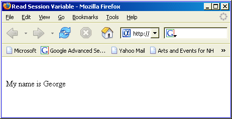

Understanding and Using Session Variables
When you create a variable inside an A5W page, the variable is not available to other pages. In other words, the next A5W page you display will have no knowledge of the firstname variable or its value. The firstname is born when the "Set Session Variable" page is loaded and dies when the page is unloaded.
To save a value that spans pages, you must use a Session variable.
To create a session variable, simply name it session.varname. It will then be persistent across all page views and can be later referenced as session.varname in subsequent pages. To demonstrate the use of session variables, we will create two new pages.
In the Web Projects Control Panel click New > Web Page (A5W) > OK.
Display the Source tab of the editor.
Type the following text into the editor.
<html> <head> <meta name="generator" content="Alpha Five HTML Editor"> <title>Set Session Variable</title> </head> <body> <%a5 session.myname = "George" %> <p> </p> </body> </html> |
Select File > Save As.
Enter "Set Session Variable" in the File name field and click Save.
Click
 to close the HTML Editor.
to close the HTML Editor.In the Web Projects Control Panel click New > Web Page (A5W) > OK.
Display the Source tab of the editor.
Type the following text into the editor.
<html> <head> <meta name="generator" content="Alpha Five HTML Editor"> <title>Read Session Variable</title> </head> <body> <p> </p> <%a5 ? "My name is " + session.myname %> </body> </html> |
Select File > Save As.
Enter "Read Session Variable" in the File name field and click Save.
Click
to close the HTML Editor.Select the "Read Session Variable" page, then right click and select Publish (Local Webroot) and open. This will open the page (which is blank) in your browser.
Close the browser and return to the Web Projects Control Panel.
Select the Lesson 10b page, then right click and select Publish (Local Webroot) and open. This will open the page in your browser. The page will display the value of session.myname, which was set in the Lesson 10a page. The page should look like this.

The session.myname variable will remain available as long as these conditions are met:
The Application Server is not stopped
Your next interaction (page request or update) occurs within the Application Server within the session lifetime interval. The minimum value for this interval is 300 seconds (5 minutes).
You may have as many session variables as you require. The data type of a session variable will be determined by the value that you assign to it.
See Also